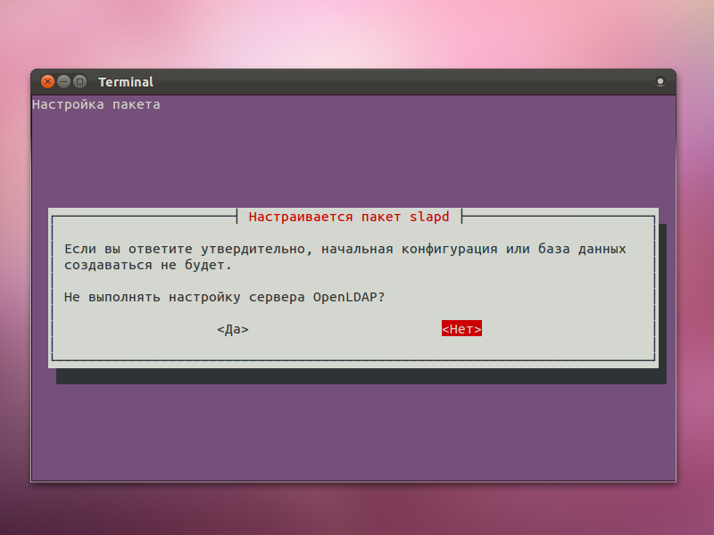
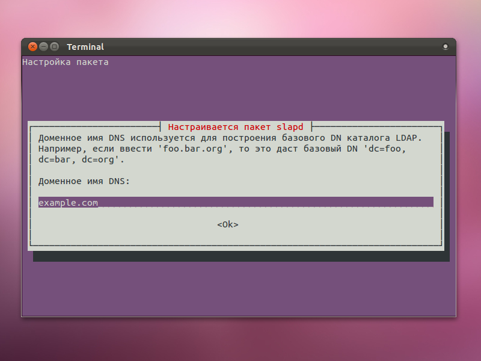
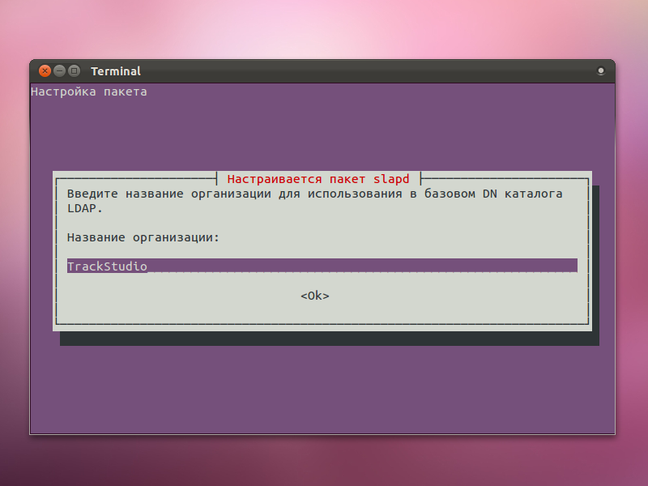
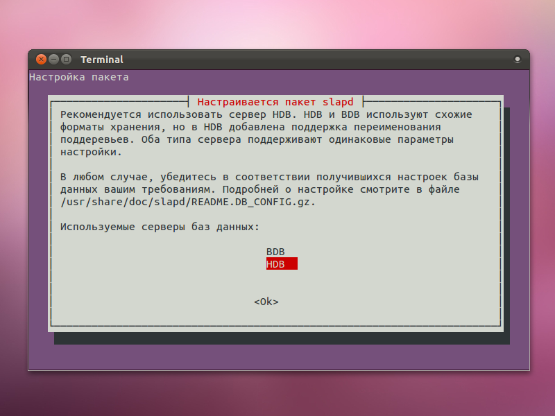
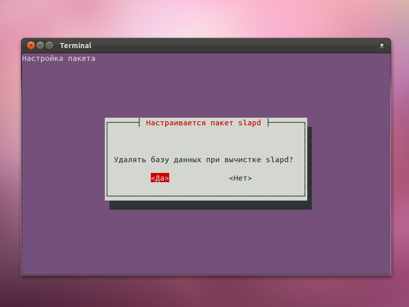
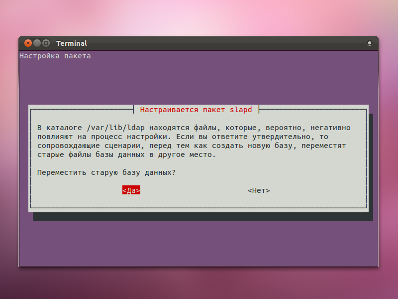
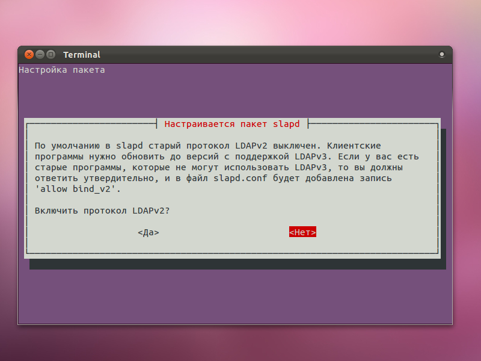
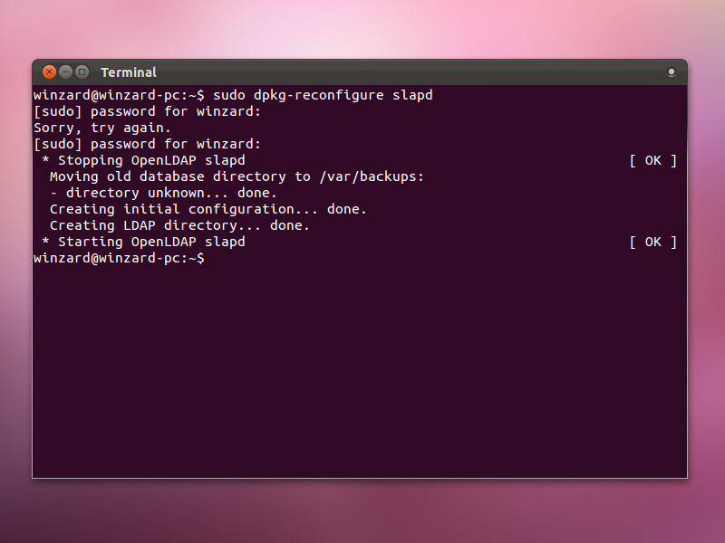

|
<< Click to Display Table of Contents >> Navigation: Rus > Руководство по установке > Установка OpenLDAP и настройка авторизации пользователей TrackStudio |
Установите OpenLDAP из репозиториев
sudo apt-get install slapd ldap-utils
При установке вам будет предложено ввести пароль пользователя admin
В Ubuntu начиная с версии 10.4 используется OpenLDAP с настройкой параметров через RTC (runtime configuration). То есть настройка происходит не через редактирование параметров в файлах slapd.conf и ldap.conf, а через утилиты командной строки. Документация по настройке OpenLDAP находится по ссылке.
Настроить параметры базы данных LDAP можно через встроенную утилиту:
sudo dpkg-reconfigure slapd

Для того, чтобы выполнить начальную настройку конфигурации LDAP, нужно нажать Нет. Такая вот логика.

Укажите доменное имя. Например, example.com

Укажите название организации
После этого введите пароль администратора и подтвердите его

Выберите используемую базу данных (HDB)


Если в вашей системе остались старые и уже ненужные настройки LDAP - их нужно удалить.

Протокол LDAPv2 можно не включать

slapd перенастроится и перезапустится
Создайте файл person.ldif со следующим содержимым (укажите нужные вам данные):
dn: ou=Users,dc=example,dc=com
objectClass: organizationalUnit
ou: Users
dn: ou=Groups,dc=example,dc=com
objectClass: organizationalUnit
ou: Groups
dn: uid=john,ou=Users,dc=example,dc=com
objectClass: inetOrgPerson
uid: john
sn: Doe
givenName: John
cn: John Doe
displayName: John Doe
uidNumber: 1000
gidNumber: 10000
userPassword: password
mail: john.doe@example.com
postalCode: 31000
l: Smolensk
o: Example
mobile: +7 (960) XXX XX XX
title: System Administrator
postalAddress:
initials: JD
Импортируйте файл в директорию из консоли командой
ldapadd -x -D "cn=admin,dc=example,dc=com" -W -f person.ldif
При запросе пароля введите пароль администратора LDAP, который вы указали при настройке.
Вы можете настроить параметры соединения с LDAP в утилите TrackStudio Server Manager, либо, если ее нет - в любом текстовом редакторе.
1.Запустите Server Manager (В папке, куда установлена TrackStudio Enterprise Standalone запустите sman.exe)
2.Перейдите в раздел "Безопасность"
3.Откройте вкладку LDAP
4.Включите опцию "Использовать LDAP авторизацию".
5.Если требуется, включите опцию "Использовать LDAP поверх SSL"
6.Укажите хост и порт сервера LDAP, с которым будет соединяться TrackStudio
Если у вас отсутствует возможность запустить Server Manager, вы можете настроить интеграцию с LDAP в файле trackstudio.security.properties
1.Включите поддержку LDAP в trackstudio.security.properties:
trackstudio.useLDAP yes
2.Укажите адрес сервера LDAP в trackstudio.security.properties:
ldap.host=127.0.0.1
3.Укажите baseDN к cn=Users для вашего доменного имени:
ldap.baseDN=ou\=Users,dc\=example,dc\=com
4.Укажите учетную запись пользователя, через которую будет осуществляться вход в Active Directory:
ldap.userDN=cn\=admin,dc\=example,dc\=com
Для того, чтобы пользователи, зарегистрированные в LDAP, имели доступ к TrackStudio, для них должны быть созданы учетные записи. Эти учетные записи должны совпадать с записями в LDAP по названию аккаунта, либо по имени пользователя.
5.Чтобы входить по имени и фамилии пользователя установите:
ldap.loginAttrLDAP=displayName
ldap.loginAttrTS name
Чтобы входить по названию учетной записи:
ldap.loginAttrTS login
ldap.loginAttrLDAP=sAMAccountName
6.Укажите пароль администратора LDAP
ldap.userDNpass=secret
7.Запустите сервер TrackStudio
Если установлено trackstudio.useLDAP yes, TrackStudio будет соединяться с указанным LDAP-сервером при попытке входа пользователя и выполнять авторизацию средствами LDAP, используя учетную запись, указанную в ldap.userDN и ldap.userDNpass. TrackStudio затем выполнит локальный поиск в своей базе данных пользователя, соответствующего указанному логину. После этого TrackStudio будет искать в сервере LDAP пользователя, запись ldap.loginAttrLDAP которого соответствует имени или логину (в зависимости от ldap.loginAttrTS) найденного пользователя. Затем этот пользователь будет авторизован паролем, указанным в окне входа в систему.
TrackStudio поддерживает работу с фильтрами LDAP. Вы можете вписывать свои фильтры в "Поле поиска в LDAP". Таким образом TrackStudio будет работать только с теми пользователями, которые удовлетворяют условиям указанного фильтра. Подробнее о фильтрах вы можете прочитать в этой статье.
•Для входа в TrackStudio в окне входа вы должны использовать именно логин
•В любом случае соответствующий пользователь должен иметь учетную запись в TrackStudio
•Когда вы меняете пароль средствами TrackStudio, на сервере LDAP он не меняется
•Пользователь может войти либо при совпадении пароля с паролем в LDAP, либо с паролем в локальной базе данных TrackStudio. Чтобы запретить встроенную авторизацию, удалите com.trackstudio.app.adapter.auth.SimpleAuthAdapter из цепочки в файле trackstudio.adapter.properties.